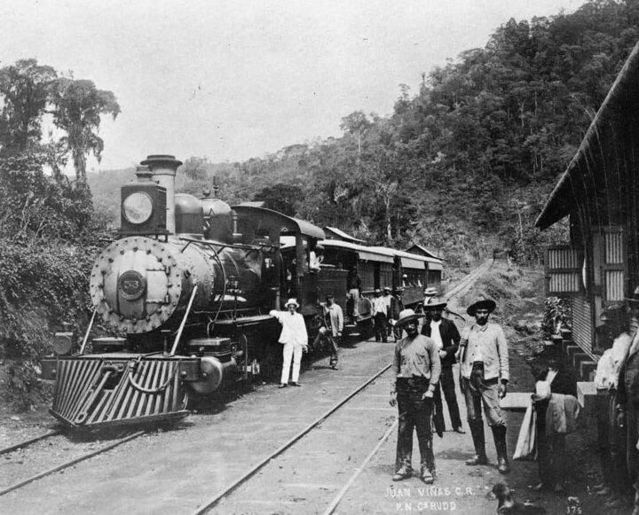
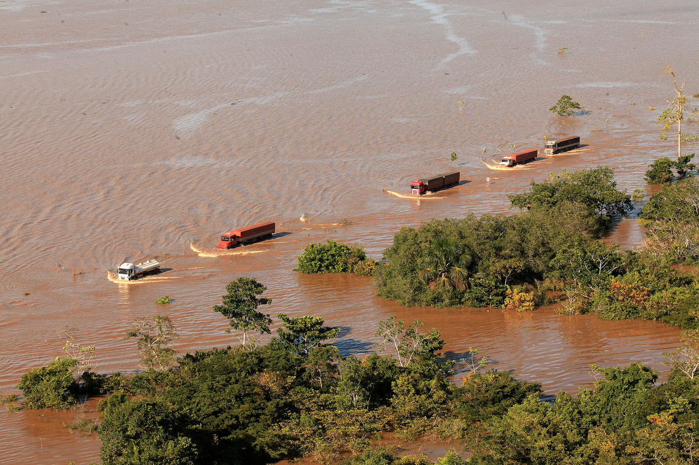

Breve História de Porto Velho
Porto Velho, capital de Rondônia, nasceu oficialmente em 1914, impulsionada pela construção da Estrada de Ferro Madeira-Mamoré (EFMM). Essa obra monumental, marcada por grandes desafios naturais e pela presença de trabalhadores de mais de 50 nacionalidades, transformou a região em um verdadeiro ponto de encontro cultural e econômico.
O Desenvolvimento da Cidade
Com o tempo, Porto Velho deixou de ser apenas um núcleo ferroviário. A exploração de cassiterita, a expansão da agricultura, a construção de hidrelétricas no rio Madeira e o crescimento urbano transformaram a cidade em um importante polo da região Norte.
A cultura local mistura elementos indígenas, nordestinos, bolivianos e muitas outras origens, formando uma identidade única. Suas festas tradicionais, gastronomia variada e forte conexão com o rio fazem parte do cotidiano porto-velhense.
Pontos Marcantes
- Complexo da Estrada de Ferro Madeira-Mamoré
- Mercado Cultural
- Rio Madeira e suas embarcações tradicionais
- Catedral Sagrado Coração de Jesus
- Parque Natural de Porto Velho
Com sua história rica e natureza exuberante, Porto Velho continua crescendo e preservando suas tradições.